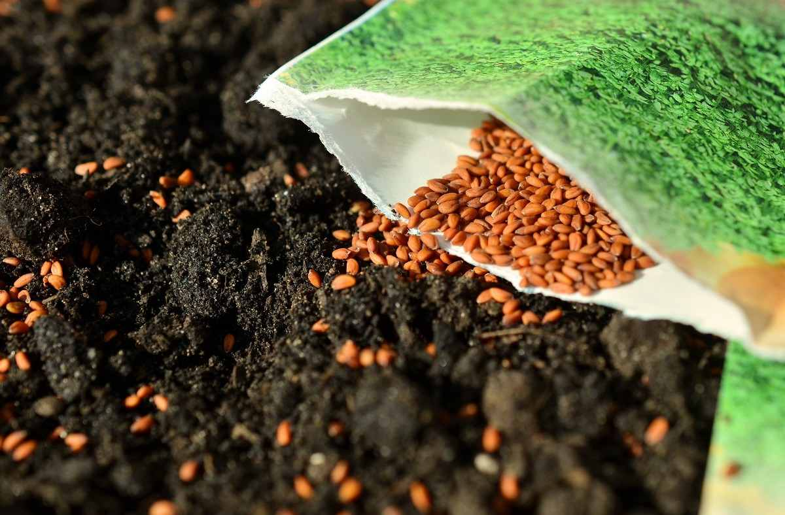
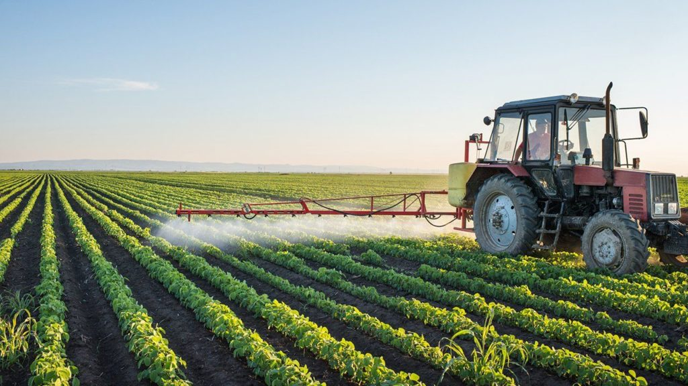

The implementing agencies will be State Departments of Agriculture, State
Agriculture Universities, Krishi Vigyan Kendras, State Seeds Corporation,
National Seeds Corporation, State Farms Corporation of India (SFCI), State
Seeds Certification Agencies, Department of Seed Certification.
implementing agency will be
Readmore
Agricultural machines take an important role to increase productivity with timely and precise fieldwork. To promote the usage of farm mechanization and increase the ratio of farm power to cultivable unit area up to 2.5 kW/ha, the scheme will be implemented in all the Indian states
The SMAM scheme has both centrally sponsored
Readmore